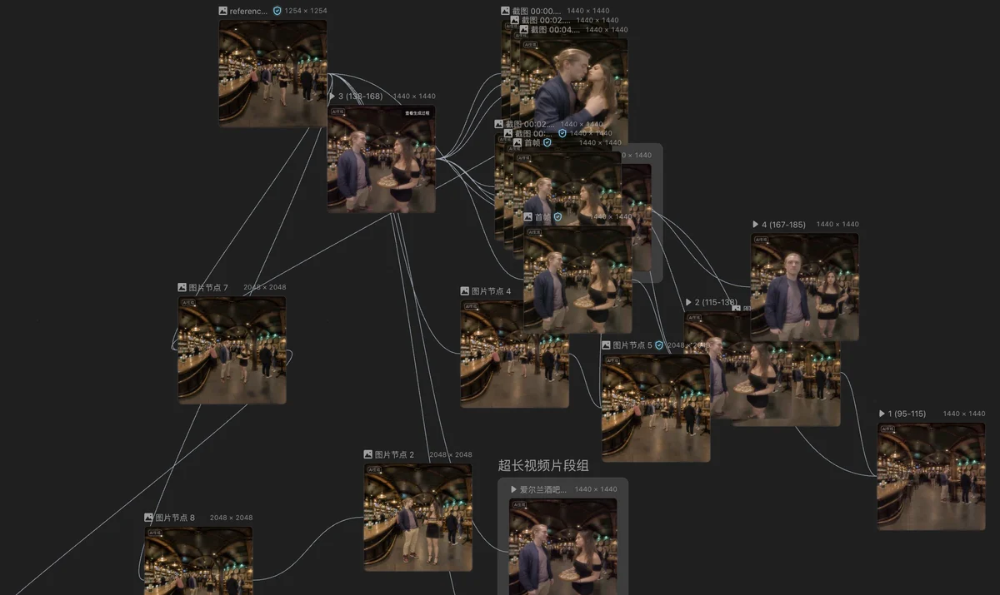

01 · A research agenda for the behavioral sciences
GenerativeImmersion
Generative immersion places people inside situations that AI has generated: scenes, people and events made by
video and world models rather than filmed on location or modeled by hand. For the behavioral sciences, it turns
the immersive scenario into something you can write, vary and share.
Two lines of development meet here. Video models now hold a scene together over long continuous shots, with sound. World models turn a prompt or a photo into a space you can move through.
Scroll sideways through the strands, and down within each one.Scroll down within each strand.
The same people, the same place and synchronized sound, held together across long continuous shots.
Seedance 2.5ByteDance SeedJul 2026one 30-second take from a text prompt, with sound
Seedance 2.5 generates up to 30 seconds of video and sound in a single pass, and extends a scene round after round while keeping its characters and setting. It can draw on up to 30 images, 10 video clips and 10 audio clips at once, and on untextured 3D renders that fix the blocking and the camera path.
Edits can target a single timestamp, the camera move or a green-screen background, while the rest of the scene stays as it was.
For researchKeeping everything constant while one element changes is the logic of an experimental manipulation.
More from the same release
Extensiona scene carried on with the same characters, 65 s
Clay-render referencea rough 3D layout sets camera and blocking, 31 s
Genie 4 turns a text prompt or an image into a world that keeps generating in real time as you move through it with the keyboard, now with its own sound: ambient noise, music and dialogue. Typed instructions change the world while it runs, from the weather and the camera to people walking in, and Gemini models plan the events so that cause and effect stay plausible.
It follows Genie 3 (August 2025), which Google AI Ultra subscribers have been able to explore in Project Genie since January 2026. Genie 4 is a research preview for trusted testers for now and is coming to Project Genie and to early-access partners of the Gemini API. Details can still drift over long sessions, and all generated video and audio carry a SynthID watermark.
ByteDance · shown Oct 2026 · not released yetByteDance’s world model
ByteDance showed a real-time world model of its own on stage at a Douyin gala in October. One sentence became a room seen from a tiny person’s height, explored with keyboard and mouse; asking for a spoon next to a cup produced one at once, and a door joined the room to outer space. Other demos simulated street traffic for self-driving cars and a home for training robots.
ByteDance has not yet named it or said when it will be released. In September, Bloomberg reported that ByteDance was building a real-time world model on Seedance, running at about 20 frames per second in the cloud and aimed at Pico headsets.
Marble builds persistent worlds from text, photos, video or a rough 3D layout. They can be edited and combined, then exported as Gaussian splats or meshes, for example into a game engine.
For researchA world that keeps generating can respond to what a participant does, not only show what everyone should see.
Also moving
Tencent · Apr 2026 · openHY-World 2.0 generates or reconstructs editable 3D worlds from text, images or video, as meshes or Gaussian splats.
Meta Reality Labs · Nov 2025 · researchWorldGen builds traversable, interactive 3D worlds from a single text prompt.
03 · Ongoing research
Ongoing research
A perspective paper that maps the field, and two studies that put generated scenarios to work: one tests whether they hold up as research stimuli, the other lets a scenario respond to what participants do.
TBC
Perspective paper · in preparation
Generative Immersion for behavioral sciences: A scoping review, position, and research agenda
Authors and venue to be confirmed. The preprint will appear here.

Ongoing · validation study
Scalable Immersion
Validating AI-generated video scenarios
Can an AI-generated scenario stand in for a filmed one? We take an established bystander scenario from the MAXLab scenario set, in which a guest in an Irish pub is harassed and others can step in, and generate it anew with video models. Written, filmed and generated versions of the same incident are compared on presence, perceived realism and the emotions they evoke.
Related publications
Li, R., Knabe, M., Derakhshan, S., Arui, A.-K., & van Gelder, J.-L. (revise and resubmit). Beyond immersion and presence: Rethinking validity in virtual reality criminology.
Action-contingent reactive video scenarios for behavioral science research
Most scenario studies are linear: everyone watches the same clip, then says what they would do. Generative enactments let the scenario respond. What a participant does, such as stepping in, calling for help or looking away, decides how the scene continues, and the next clip is generated for that choice. People meet the consequences of their own actions, and every choice becomes behavioral data.
Immersive scenarios already let researchers study behavior in situations that are hard to observe or to stage. Generating them changes what such studies can do.
01
Situations you cannot stage
Violence, emergencies and places that do not exist yet are unethical, dangerous or impossible to film. Generated scenarios bring people into them and record how they respond.A fight breaking out in a crowded bar, seen through a bystander's eyes.
02
Control without giving up realism
Experiments usually trade realism for control. A generated scene can hold everything constant and change a single cue: a gesture, a line of dialogue, the lighting.The same pub, the same quarrel; only whether the victim calls for help changes.
03
Many situations, not one
A variant that once needed a new shoot now takes a new prompt. Studies can sample situations as carefully as they sample people, and adapt scenes across languages and cultures.Fifty street encounters, drawn like items for a scale.
04
Behavior, not only reports
Inside a scenario people act rather than predict how they would act. Where they look, when they step in and which way they turn all become data.Where people look in the seconds before they decide to intervene.
05
Futures you can test
Policies, technologies and places that do not exist yet can be generated and tried out before they are built, in the spirit of science fiction science.A station where a camera can call the police, before such stations exist.
06
Shared and rebuilt
Prompts, references, seeds and model versions can travel with a paper, so that other labs can rebuild the stimulus, extend it and replicate the study.A stimulus that ships with its recipe.
And what has to hold
Generated is not yet valid.
A generated scene still has to evoke the responses that matter, and generated content should be disclosed to participants and readers. Models also change fast, which puts reproducibility at risk. We treat these as research questions in their own right.